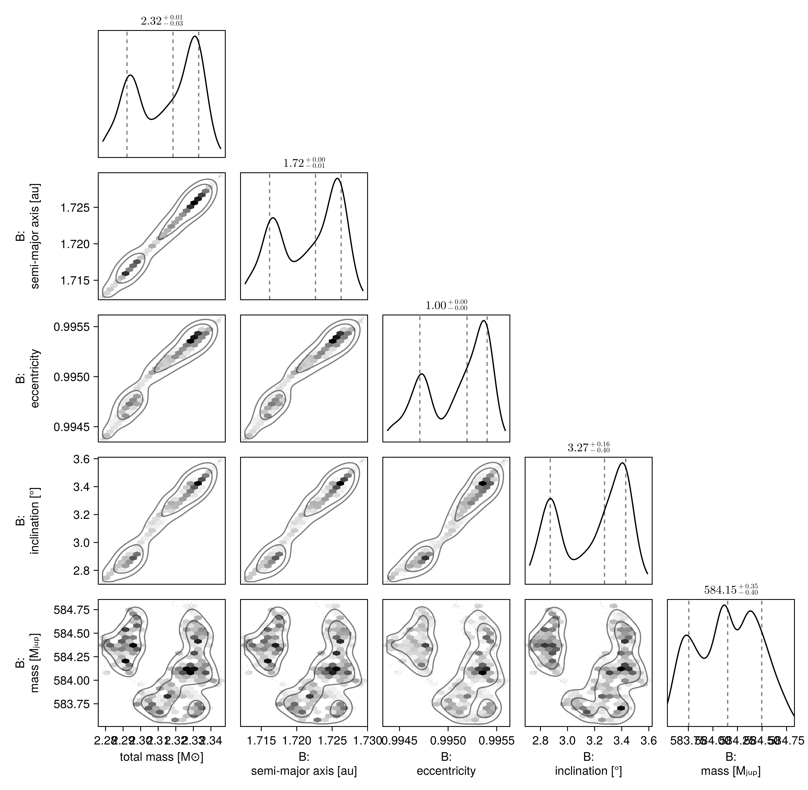
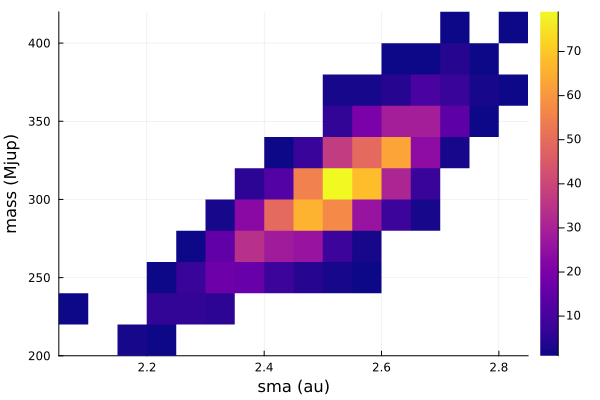

Fit Proper Motion Anomaly
One of the features of Octofitter.jl is support for absolute astrometry aka. proper motion anomaly aka. astrometric acceleration. These data points are typically calculated by finding the difference between a long term proper motion of a star between the Hipparcos and GAIA catalogs, and their proper motion calculated within the windows of each catalog.
For Hipparcos/GAIA this gives four data points that can constrain the dynamical mass & orbits of planetary companions (assuming we subtract out the net trend).
You can specify these quantities manually, but the easiest way is to use the Hipparcos-GAIA Catalog of Accelerations (HGCA, https://arxiv.org/abs/2105.11662). Support for loading this catalog is built into Octofitter.jl.
Let's look at the star and companion HD 91312 A & B, discovered by SCExAO. We will use their published astrometry and proper motion anomaly extracted from the HGCA.
The first step is to find the GAIA source ID for your object. For HD 91312, SIMBAD tells us the GAIA DR2 ID is 756291174721509376 (which we will assume is the same in eDR3).
Planet Model
For this model, we will have to add the variable mass as a prior. The units used on this variable are Jupiter masses, in contrast to M, the primary's mass, in solar masses. A reasonable uninformative prior for mass is Uniform(0,1000) or LogUniform(1,1000) depending on the situation.
Initial setup:
using Octofitter, Distributions, Plotsastrom = PlanetRelAstromLikelihood(
(epoch=mjd("2016-12-15"), ra=133., dec=-174., σ_ra=07.0, σ_dec=07., cor=0.2),
(epoch=mjd("2017-03-12"), ra=126., dec=-176., σ_ra=04.0, σ_dec=04., cor=0.3),
(epoch=mjd("2017-03-13"), ra=127., dec=-172., σ_ra=04.0, σ_dec=04., cor=0.1),
(epoch=mjd("2018-02-08"), ra=083., dec=-133., σ_ra=10.0, σ_dec=10., cor=0.4),
(epoch=mjd("2018-11-28"), ra=058., dec=-122., σ_ra=10.0, σ_dec=20., cor=0.3),
(epoch=mjd("2018-12-15"), ra=056., dec=-104., σ_ra=08.0, σ_dec=08., cor=0.2),
)
@planet B Visual{KepOrbit} begin
a ~ truncated(LogNormal(9,3),lower=0)
e ~ truncated(Normal(0, 0.5), lower=0, upper=1) #Uniform(0,0.9999)
ω ~ UniformCircular()
i ~ Sine() # The Sine() distribution is defined by Octofitter
Ω ~ UniformCircular()
# mass ~ LogNormal(300, 18)
# Anoter option would be:
mass ~ Uniform(0.5, 1000)
τ ~ UniformCircular(1.0)
P = √(B.a^3/system.M)
tp = B.τ*B.P*365.25 + 57737 # reference epoch for τ. Choose an MJD date near your data.
end astromPlanet B
Derived:
ω, Ω, τ, P, tp,
Priors:
a Truncated(Distributions.LogNormal{Float64}(μ=9.0, σ=3.0); lower=0.0)
e Truncated(Distributions.Normal{Float64}(μ=0.0, σ=0.5); lower=0.0, upper=1.0)
ωy Distributions.Normal{Float64}(μ=0.0, σ=1.0)
ωx Distributions.Normal{Float64}(μ=0.0, σ=1.0)
i Sine()
Ωy Distributions.Normal{Float64}(μ=0.0, σ=1.0)
Ωx Distributions.Normal{Float64}(μ=0.0, σ=1.0)
mass Distributions.Uniform{Float64}(a=0.5, b=1000.0)
τy Distributions.Normal{Float64}(μ=0.0, σ=1.0)
τx Distributions.Normal{Float64}(μ=0.0, σ=1.0)
Octofitter.UnitLengthPrior{:ωy, :ωx}: √(ωy^2+ωx^2) ~ LogNormal(log(1), 0.02)
Octofitter.UnitLengthPrior{:Ωy, :Ωx}: √(Ωy^2+Ωx^2) ~ LogNormal(log(1), 0.02)
Octofitter.UnitLengthPrior{:τy, :τx}: √(τy^2+τx^2) ~ LogNormal(log(1), 0.02)
PlanetRelAstromLikelihood Table with 6 columns and 6 rows:
epoch ra dec σ_ra σ_dec cor
┌─────────────────────────────────────────
1 │ 57737.0 133.0 -174.0 7.0 7.0 0.2
2 │ 57824.0 126.0 -176.0 4.0 4.0 0.3
3 │ 57825.0 127.0 -172.0 4.0 4.0 0.1
4 │ 58157.0 83.0 -133.0 10.0 10.0 0.4
5 │ 58450.0 58.0 -122.0 10.0 20.0 0.3
6 │ 58467.0 56.0 -104.0 8.0 8.0 0.2
System Model & Specifying Proper Motion Anomaly
Now that we have our planet model, we create a system model to contain it.
@system HD91312 begin
M ~ truncated(Normal(1.61, 0.1), lower=0)
plx ~ gaia_plx(gaia_id=756291174721509376)
# Priors on the centre of mass proper motion
pmra ~ Normal(-137, 10)
pmdec ~ Normal(2, 10)
end HGCALikelihood(gaia_id=756291174721509376) BSystem model HD91312
Derived:
Priors:
M Truncated(Distributions.Normal{Float64}(μ=1.61, σ=0.1); lower=0.0)
plx Truncated(Distributions.Normal{Float64}(μ=29.14532470703125, σ=0.1407301127910614); lower=0.0)
pmra Distributions.Normal{Float64}(μ=-137.0, σ=10.0)
pmdec Distributions.Normal{Float64}(μ=2.0, σ=10.0)
Planet B
Derived:
ω, Ω, τ, P, tp,
Priors:
a Truncated(Distributions.LogNormal{Float64}(μ=9.0, σ=3.0); lower=0.0)
e Truncated(Distributions.Normal{Float64}(μ=0.0, σ=0.5); lower=0.0, upper=1.0)
ωy Distributions.Normal{Float64}(μ=0.0, σ=1.0)
ωx Distributions.Normal{Float64}(μ=0.0, σ=1.0)
i Sine()
Ωy Distributions.Normal{Float64}(μ=0.0, σ=1.0)
Ωx Distributions.Normal{Float64}(μ=0.0, σ=1.0)
mass Distributions.Uniform{Float64}(a=0.5, b=1000.0)
τy Distributions.Normal{Float64}(μ=0.0, σ=1.0)
τx Distributions.Normal{Float64}(μ=0.0, σ=1.0)
Octofitter.UnitLengthPrior{:ωy, :ωx}: √(ωy^2+ωx^2) ~ LogNormal(log(1), 0.02)
Octofitter.UnitLengthPrior{:Ωy, :Ωx}: √(Ωy^2+Ωx^2) ~ LogNormal(log(1), 0.02)
Octofitter.UnitLengthPrior{:τy, :τx}: √(τy^2+τx^2) ~ LogNormal(log(1), 0.02)
PlanetRelAstromLikelihood Table with 6 columns and 6 rows:
epoch ra dec σ_ra σ_dec cor
┌─────────────────────────────────────────
1 │ 57737.0 133.0 -174.0 7.0 7.0 0.2
2 │ 57824.0 126.0 -176.0 4.0 4.0 0.3
3 │ 57825.0 127.0 -172.0 4.0 4.0 0.1
4 │ 58157.0 83.0 -133.0 10.0 10.0 0.4
5 │ 58450.0 58.0 -122.0 10.0 20.0 0.3
6 │ 58467.0 56.0 -104.0 8.0 8.0 0.2
HGCALikelihood Table with 35 columns and 1 row:
hip_id gaia_source_id gaia_ra gaia_dec radial_velocity ⋯
┌──────────────────────────────────────────────────────────────────
1 │ 51658 756291174721509376 158.307 40.4256 9.0 ⋯
We specify priors on M and plx as usual, but here we use the gaia_plx helper function to read the parallax and uncertainty directly from the HGCA using its source ID.
We also add parameters for the long term system's proper motion. This is usually close to the long term trend between the Hipparcos and GAIA measurements.
After the priors, we add the proper motion anomaly measurements from the HGCA. If this is your first time running this code, you will be prompted to automatically download and cache the catalog which may take around 30 seconds.
Sampling from the posterior
Sample from our model as usual:
model = Octofitter.LogDensityModel(HD91312)
chain = octofit(model)Chains MCMC chain (1000×32×1 Array{Float64, 3}):
Iterations = 1:1:1000
Number of chains = 1
Samples per chain = 1000
Wall duration = 759.26 seconds
Compute duration = 759.26 seconds
parameters = M, plx, pmra, pmdec, B_a, B_e, B_ωy, B_ωx, B_i, B_Ωy, B_Ωx, B_mass, B_τy, B_τx, B_ω, B_Ω, B_τ, B_P, B_tp
internals = n_steps, is_accept, acceptance_rate, hamiltonian_energy, hamiltonian_energy_error, max_hamiltonian_energy_error, tree_depth, numerical_error, step_size, nom_step_size, is_adapt, loglike, logpost, tree_depth, numerical_error
Summary Statistics
parameters mean std mcse ess_bulk ess_tail rhat ⋯
Symbol Float64 Float64 Float64 Float64 Float64 Float64 ⋯
M 2.3144 0.0179 0.0112 2.9325 13.6609 1.6398 ⋯
plx 30.8737 0.0431 0.0245 3.4486 20.4126 1.4072 ⋯
pmra -137.6952 0.0011 0.0006 3.7814 20.3236 1.3452 ⋯
pmdec 1.9292 0.0021 0.0008 6.9738 12.5730 1.7664 ⋯
B_a 1.7217 0.0044 0.0028 2.9254 13.6609 1.6439 ⋯
B_e 0.9951 0.0003 0.0002 3.1662 12.3484 1.5286 ⋯
B_ωy 0.9661 0.0010 0.0004 6.5402 12.2549 1.4200 ⋯
B_ωx 0.2240 0.0026 0.0015 3.4733 20.3560 1.3903 ⋯
B_i 2.3585 0.0043 0.0027 2.7914 13.9414 1.7154 ⋯
B_Ωy 0.9775 0.0034 0.0019 3.4317 12.3260 1.3745 ⋯
B_Ωx -0.5371 0.0012 0.0004 8.2462 12.4248 1.0766 ⋯
B_mass 584.1519 0.3152 0.1198 7.4634 26.8812 1.0980 ⋯
B_τy -0.6876 0.0008 0.0004 4.2895 14.4857 1.3958 ⋯
B_τx -0.7689 0.0023 0.0012 4.7864 12.8533 1.5174 ⋯
B_ω 0.2278 0.0024 0.0014 3.2971 37.4465 1.4548 ⋯
B_Ω -0.5024 0.0017 0.0010 2.9377 12.8247 1.5395 ⋯
B_τ -0.3661 0.0002 0.0001 5.5507 13.1777 1.1713 ⋯
⋮ ⋮ ⋮ ⋮ ⋮ ⋮ ⋮ ⋱
1 column and 2 rows omitted
Quantiles
parameters 2.5% 25.0% 50.0% 75.0% 97.5%
Symbol Float64 Float64 Float64 Float64 Float64
M 2.2818 2.2966 2.3184 2.3305 2.3383
plx 30.7976 30.8455 30.8668 30.9075 30.9630
pmra -137.6970 -137.6959 -137.6954 -137.6945 -137.6930
pmdec 1.9248 1.9275 1.9294 1.9304 1.9334
B_a 1.7135 1.7173 1.7226 1.7256 1.7276
B_e 0.9944 0.9948 0.9952 0.9954 0.9955
B_ωy 0.9637 0.9656 0.9663 0.9669 0.9679
B_ωx 0.2195 0.2221 0.2245 0.2260 0.2277
B_i 2.3512 2.3536 2.3600 2.3624 2.3640
B_Ωy 0.9701 0.9747 0.9781 0.9803 0.9824
B_Ωx -0.5393 -0.5379 -0.5371 -0.5363 -0.5342
B_mass 583.6139 583.8784 584.1500 584.4015 584.7052
B_τy -0.6896 -0.6880 -0.6876 -0.6871 -0.6862
B_τx -0.7728 -0.7713 -0.7684 -0.7674 -0.7647
B_ω 0.2239 0.2260 0.2282 0.2296 0.2313
B_Ω -0.5047 -0.5037 -0.5028 -0.5008 -0.4988
B_τ -0.3666 -0.3662 -0.3661 -0.3660 -0.3658
B_P 1.4849 1.4849 1.4849 1.4849 1.4850
B_tp 57538.1932 57538.3644 57538.4259 57538.4896 57538.6097
This takes about a minute on the first run due to JIT startup latency; subsequent runs are very quick even on e.g. an older laptop.
Analysis
The first step is to look at the table output above generated by MCMCChains.jl. The rhat column gives a convergence measure. Each parameter should have an rhat very close to 1.000. If not, you may need to run the model for more iterations or tweak the parameterization of the model to improve sampling. The ess column gives an estimate of the effective sample size. The mean and std columns give the mean and standard deviation of each parameter.
The second table summarizes the 2.5, 25, 50, 75, and 97.5 percentiles of each parameter in the model.
Another useful plotting function is octoplot which takes similar arguments and produces a 9 panel plot:
octoplot(model, chain)
Pair Plot
If we wish to examine the covariance between parameters in more detail, we can construct a pair-plot (aka. corner plot).
For a quick look, you can just run octocorner(model, chain), but for more control output you may wish to customize the labels, units, unit labels, etc. See the documentation of PairPlots.jl for more details.
##Create a corner plot / pair plot.
# We can access any property from the chain specified in Variables
using CairoMakie: Makie
using PairPlots
octocorner(model, chain, small=true)
Fitting Astrometric Acceleration Only
If you wish to look at the possible locations/masses of a planet around a star using onnly GAIA/HIPPARCOS, you can follow a simplified approach.
As a start, you can restrict the orbital parameters to just semi-major axis, epoch of periastron passage, and mass.
@planet B Visual{KepOrbit} begin
a ~ LogUniform(0.1, 100)
mass ~ LogUniform(1, 2000)
i = 0
e = 0
Ω = 0
ω = 0
τ ~ UniformCircular(1.0)
P = √(B.a^3/system.M)
tp = B.τ*B.P*365.25 + 57737 # reference epoch for τ. Choose an MJD date near your data.
end
@system HD91312 begin
M ~ truncated(Normal(1.61, 0.2), lower=0)
plx ~ gaia_plx(gaia_id=756291174721509376)
# Priors on the centre of mass proper motion
pmra ~ Normal(0, 500)
pmdec ~ Normal(0, 500)
end HGCALikelihood(gaia_id=756291174721509376) BSystem model HD91312
Derived:
Priors:
M Truncated(Distributions.Normal{Float64}(μ=1.61, σ=0.2); lower=0.0)
plx Truncated(Distributions.Normal{Float64}(μ=29.14532470703125, σ=0.1407301127910614); lower=0.0)
pmra Distributions.Normal{Float64}(μ=0.0, σ=500.0)
pmdec Distributions.Normal{Float64}(μ=0.0, σ=500.0)
Planet B
Derived:
i, e, Ω, ω, τ, P, tp,
Priors:
a Distributions.LogUniform{Float64}(a=0.1, b=100.0)
mass Distributions.LogUniform{Int64}(a=1, b=2000)
τy Distributions.Normal{Float64}(μ=0.0, σ=1.0)
τx Distributions.Normal{Float64}(μ=0.0, σ=1.0)
Octofitter.UnitLengthPrior{:τy, :τx}: √(τy^2+τx^2) ~ LogNormal(log(1), 0.02)
HGCALikelihood Table with 35 columns and 1 row:
hip_id gaia_source_id gaia_ra gaia_dec radial_velocity ⋯
┌──────────────────────────────────────────────────────────────────
1 │ 51658 756291174721509376 158.307 40.4256 9.0 ⋯
This models assumes a circular, face-on orbit.
model = Octofitter.LogDensityModel(HD91312; autodiff=:ForwardDiff, verbosity=4) # defaults are ForwardDiff, and verbosity=0
chain = octofit(model)Chains MCMC chain (1000×28×1 Array{Float64, 3}):
Iterations = 1:1:1000
Number of chains = 1
Samples per chain = 1000
Wall duration = 5.56 seconds
Compute duration = 5.56 seconds
parameters = M, plx, pmra, pmdec, B_a, B_mass, B_τy, B_τx, B_i, B_e, B_Ω, B_ω, B_τ, B_P, B_tp
internals = n_steps, is_accept, acceptance_rate, hamiltonian_energy, hamiltonian_energy_error, max_hamiltonian_energy_error, tree_depth, numerical_error, step_size, nom_step_size, is_adapt, loglike, logpost, tree_depth, numerical_error
Summary Statistics
parameters mean std mcse ess_bulk ess_tail rhat ⋯
Symbol Float64 Float64 Float64 Float64 Float64 Float64 ⋯
M 1.6110 0.2016 0.0065 986.0912 736.5238 1.0026 ⋯
plx 29.1472 0.1298 0.0033 1551.5742 566.5157 1.0037 ⋯
pmra -137.6590 0.0210 0.0006 1405.3746 580.8777 0.9995 ⋯
pmdec 1.8917 0.0126 0.0003 1390.7192 778.8563 1.0063 ⋯
B_a 2.5204 0.1069 0.0035 995.0529 774.1110 1.0022 ⋯
B_mass 305.9037 30.8942 0.9920 983.1754 611.6775 1.0047 ⋯
B_τy -0.1306 0.1261 0.0051 623.2762 748.7792 0.9993 ⋯
B_τx 0.9840 0.0275 0.0009 1041.5304 594.7249 1.0024 ⋯
B_i 0.0000 0.0000 NaN NaN NaN NaN ⋯
B_e 0.0000 0.0000 NaN NaN NaN NaN ⋯
B_Ω 0.0000 0.0000 NaN NaN NaN NaN ⋯
B_ω 0.0000 0.0000 NaN NaN NaN NaN ⋯
B_τ 0.2710 0.0203 0.0008 611.5030 684.4568 0.9992 ⋯
B_P 3.1610 0.0109 0.0004 726.5016 607.8531 0.9997 ⋯
B_tp 58049.9449 24.2703 0.9928 609.9995 684.4568 0.9993 ⋯
1 column omitted
Quantiles
parameters 2.5% 25.0% 50.0% 75.0% 97.5%
Symbol Float64 Float64 Float64 Float64 Float64
M 1.2153 1.4825 1.6125 1.7514 1.9896
plx 28.8974 29.0536 29.1507 29.2364 29.3928
pmra -137.6993 -137.6738 -137.6585 -137.6451 -137.6160
pmdec 1.8674 1.8835 1.8922 1.9001 1.9160
B_a 2.3021 2.4555 2.5248 2.5974 2.7129
B_mass 245.3829 285.5345 306.3799 325.6454 365.1489
B_τy -0.3576 -0.2127 -0.1357 -0.0545 0.1241
B_τx 0.9234 0.9676 0.9852 1.0023 1.0323
B_i 0.0000 0.0000 0.0000 0.0000 0.0000
B_e 0.0000 0.0000 0.0000 0.0000 0.0000
B_Ω 0.0000 0.0000 0.0000 0.0000 0.0000
B_ω 0.0000 0.0000 0.0000 0.0000 0.0000
B_τ 0.2302 0.2587 0.2717 0.2841 0.3083
B_P 3.1387 3.1540 3.1608 3.1682 3.1832
B_tp 58001.7574 58035.0657 58050.6116 58065.6127 58094.8615
With such simple models, the mean tree depth is often very low and sampling proceeds very quickly.
A good place to start is a histogram of planet mass vs. semi-major axis:
Plots.histogram2d(chain["B_a"], chain["B_mass"], color=:plasma, xguide="sma (au)", yguide="mass (Mjup)")
You can also visualize the orbits and proper motion:
octoplot(model, chain)